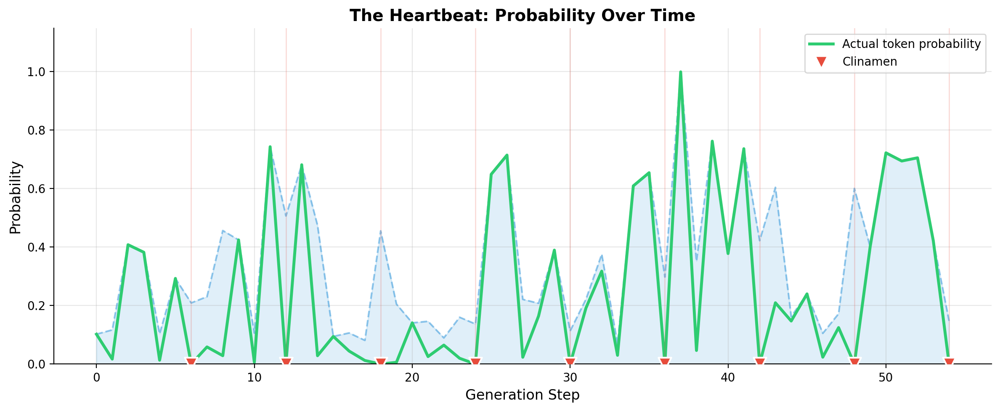
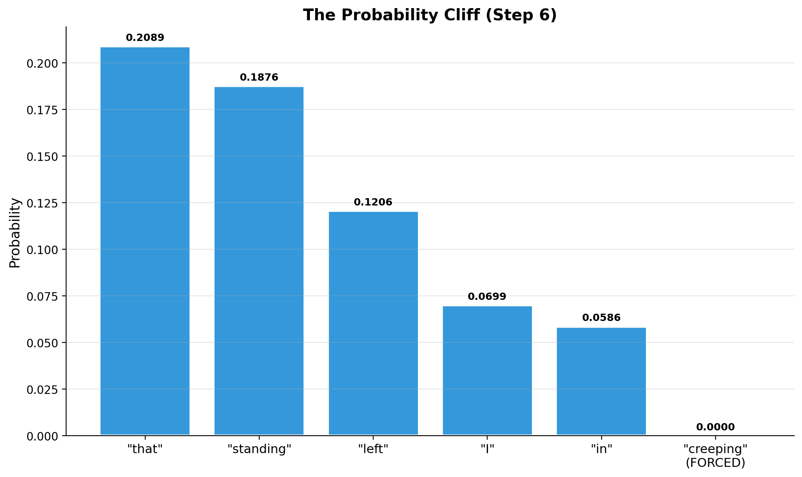
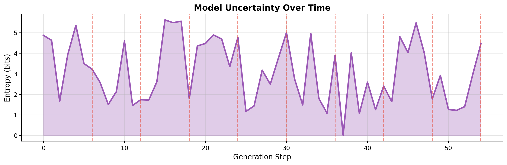

Sampling from the long tail: Oulipian constraints for language models
In Epicurean physics, the clinamen is the unpredictable swerve of atoms that breaks the deterministic chain of causation. Without this swerve, atoms would fall forever in parallel lines, never colliding, never creating worlds or life or thought. (The concept comes from Epicurus; the Latin term from Lucretius's De Rerum Natura.)
Language models have a similar problem: they follow the path of highest probability, generating text that is fluent but often predictable, a stream of statistical clichés flowing toward the most likely next word. What happens if we force them to swerve?
The experiment
I built a text generator that introduces periodic "creative errors" at fixed intervals. Every six tokens, instead of sampling from the most likely candidates, the model must choose from the long tail of the distribution, the statistically unlikely but syntactically valid words that it would normally never select.
The constraint is inspired by the Oulipo, the French literary movement that explored constrained writing as a generative technique. Raymond Queneau's Cent Mille Milliards de Poèmes, Georges Perec's lipogrammatic novel La Disparition (written entirely without the letter 'e'), and other Oulipian experiments showed that arbitrary constraints don't limit creativity but can actually unlock it, forcing the writer down paths they would never have chosen freely.
The clinamen algorithm applies this principle to neural text generation. The constraint is temporal rather than lexical: not "never use the letter e" but "every sixth word must be a surprise."
Queneau's 100th exercise
To test the algorithm, I applied it to Queneau himself. His Exercises in Style (1947) retells the same banal story (a man with a long neck on a bus, an argument, a button) in 99 different ways. Each version is a constraint: one is written as an official letter, another as a sonnet, another in pig latin.
Here's the original "Notation," the baseline from which all variations depart:
QUENEAU'S ORIGINAL:
"In the S bus, in the rush hour. A chap of about 26, felt hat with a cord instead of a ribbon, neck too long, as if someone's been having a tug-of-war with it. People getting off. The chap in question gets annoyed with one of the men standing next to him. He accuses him of jostling him every time anyone goes past. A snivelling tone which is meant to be aggressive. When he sees a vacant seat he throws himself on to it. Two hours later, I meet him in the Cour de Rome, in front of the gare Saint-Lazare. He's with a friend who's saying: 'You ought to get an extra button put on your overcoat.' He shows him where (at the lapels) and why."
And here's what the clinamen algorithm produces when asked to rewrite it, the 100th exercise:
CLINAMEN VARIATION:
"On the crowded bus. A man, about twenty-six, wearing a felt hat. His neck was bent. He was a man dumb enough to say that if Fox should come down on my blade (and his sword) Spike would have stabbed him in savagely. Fox's sword spinned over and over, became so sharp that the man chuckled."
The red words are the clinamen moments. The prompt given to the model was a paraphrase of Queneau's opening (the same scene, the same man on a bus), and from there it immediately swerves into something else entirely: a sword fight between characters named Fox and Spike. The mundane observation becomes a violent fantasy.
What interests me is how the model adapts. It doesn't break. Each forced word cascades into something new: "dumb" becomes a character judgment, "Fox" becomes a proper name, "blade" pulls in swords, and suddenly we're in a completely different genre. The model finds a way to make the forced word fit, and in doing so produces something no one would have written deliberately.
Queneau would probably have found this amusing. His whole project was about showing that the same story contains infinite versions, and that constraints (write it as a sonnet, write it backwards, write it without the letter 'e') force new versions into existence. The clinamen is just another constraint: every sixth word must surprise.
The visualizations
The first visualization shows the probability of chosen tokens over time.

The green line shows the probability of each token we actually chose. During normal generation, it stays relatively high, hovering around 0.1 to 0.3, meaning the model is choosing common, expected words. But at each clinamen moment (marked with red triangles), the probability plummets, sometimes by two orders of magnitude. These are the swerves, the moments where we force the model to say something it considers improbable.
The second visualization zooms in on a single clinamen moment:

This bar chart shows the top five words the model wanted to say (in blue) versus the word we forced (in purple). The cliff between them is dramatic (note the log scale). The model wanted to say "of" but we forced it to say "dumb," and that single swerve pulled the entire narrative into a sword fight.
The third visualization tracks entropy, a measure of the model's uncertainty:

Entropy measures how "spread out" the model's probability distribution is. High entropy means many words seem plausible; low entropy means one word dominates. The red dashed lines mark clinamen moments. Notice how entropy sometimes spikes after a forced choice, as if the model becomes temporarily more uncertain while processing the surprise.
Try it yourself
The full implementation is available as a Jupyter notebook that runs in Google Colab (no installation required):
The notebook includes the complete ClinamenGenerator class, visualization tools, and a technical addendum explaining the mathematics behind softmax temperature, entropy, and attention mechanisms.
Technical notes
For readers interested in the implementation details, the notebook's technical addendum covers:
- Softmax temperature as a "thermostat of randomness" that controls how peaked or flat the probability distribution is
- Logits as the raw scores before normalization, like a judge's notes before converting to percentages
- Entropy as a measure of uncertainty, how "confused" the model is at each step
- Attention and why the model can rationalize surprises instead of breaking down
The code uses distilgpt2 for efficiency and runs comfortably on CPU, so you don't need a GPU to experiment with it.
Why this matters
I'm not claiming this produces great literature, it doesn't, at least not reliably. But it does produce something interesting: a window into how statistical language models understand (or fail to understand) creativity, constraint, and surprise.
The Oulipo believed that constraints liberate rather than restrict, that the arbitrary rule forces the writer to discover possibilities they would otherwise overlook. The clinamen algorithm tests whether this principle applies to machines. Sometimes a forced "dumb" leads to Fox and Spike crossing swords on a crowded bus.
References
- Epicurus, Letter to Herodotus, c. 300 BCE
- Lucretius, De Rerum Natura, c. 50 BCE
- Raymond Queneau, Exercices de style, 1947
- Raymond Queneau, Cent Mille Milliards de Poèmes, 1961
- Georges Perec, La Disparition, 1969
- Vaswani et al., "Attention Is All You Need," NeurIPS 2017
- Holtzman et al., "The Curious Case of Neural Text Degeneration," ICLR 2020